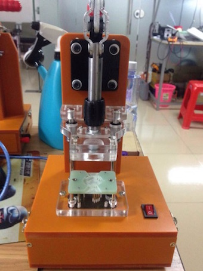
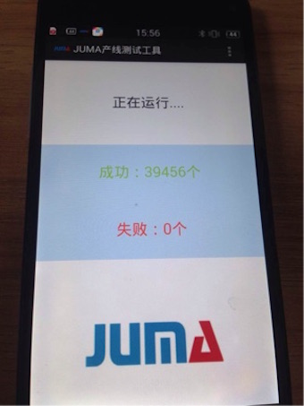
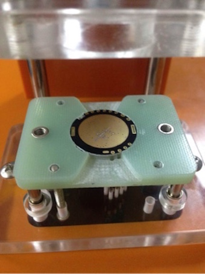
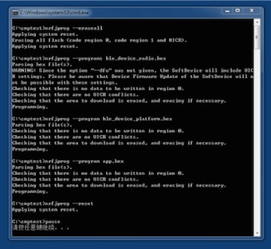
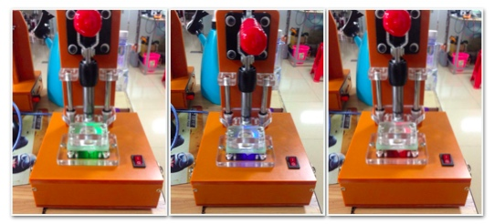

一种低成本的蓝牙硬件产线测试工具
方案背景
随着蓝牙无线产品的需求量不断加大，如何“多、快、好、省”的完成产品测试工作，成为了许多无线设备生产商面临的潜在问题。
在生产测试过程中测试工程师们关注的几个维度主要有：
- 技术指标，测试蓝牙或者2.4GHz无线设备的技术指标，主要有发射功率、发射距离、功能测试和测试数据存储；
- 速度，为了完成量产测试任务，速度是考虑测试方案时的最重要要素之一，应尽力做到在最短的时间内测试最多数量的设备；
- 成本，任何时候，成本都是一个企业的一条重要生命线，成本一般包括测试设备的费用和测试所需的人力资源；
虽然一些生产商有专业的蓝牙射频测试仪器，但是很多产品的测试不需要那么严格，有些注重性价比的产品只需要通过功能性自检就表示测试OK了。为此，JUMA开发出一套低成本、高效率的蓝牙硬件产线测试工具。
方案概述
产线测试工具包括：
- 固件烧录治具：治具一方面连接一个或多个被测设备，另一方面连接电脑，用于将固件烧录到被测设备之中；
- 固件烧录脚本：在电脑上运行烧录脚本，一键操作，便可将固件方便的烧录到被测设备；
- 产线测试APP：APP运行于普通Android移动设备上，它自动发现被测设备、发送测试命令、被测设备自检、最后显示测试结果；
- 产线测试固件：该固件为功能性自检程序，一般用于检测板载芯片、传感器、接口、存储器等外设是否能够正常工作；
产线测试典型流程（含烧录）：
- 拿取一个DUT(Device Under Test，指待测硬件)；
- 将DUT硬件放置在治具上；
- 电脑上运行烧录脚本；
- 烧录完成后，30秒之内，DUT硬件上的LED开始闪烁，表示测试成功（一般10秒内，LED便会开始闪烁）；
- 烧录完成后，若等待30秒，LED还是没有闪烁，说明DUT硬件测试没过，归类为次品；
- 将DUT硬件从治具上拿下；
- 重复第1步，开始下一个DUT硬件的烧录和测试；
方案演示
以JUMA的SMP硬件为例，演示产线测试工具的使用过程：
1. 准备好治具：

2. 运行“产线测试APP”：

3. 将SMP放置在治具上：

4. 电脑上运行烧录脚本：
说明：这个步骤后，SMP开始发射广播，手机APP与其建立连接，发送测试命令，SMP进行自检测试。

5. LED“红-绿-蓝”交替闪烁，表示测试成功：

服务内容
- 产线测试APP；
- 产线测试固件；
- 固件烧录治具；
- 固件烧录脚本；
方案咨询
请发邮件至hello@jumacc.com，客服人员会和您联系。